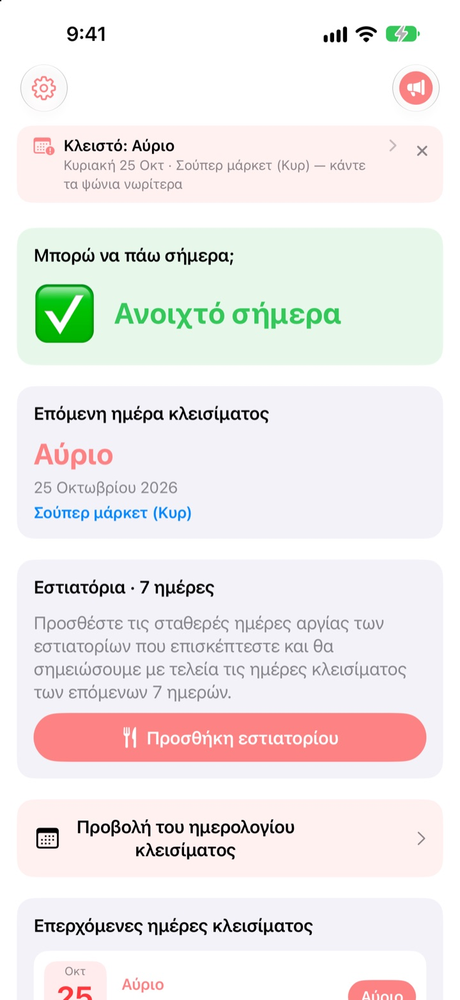
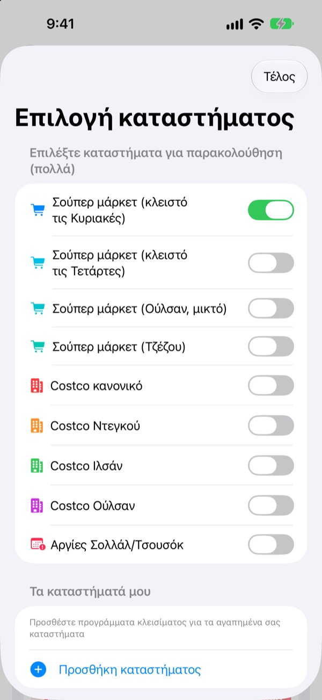
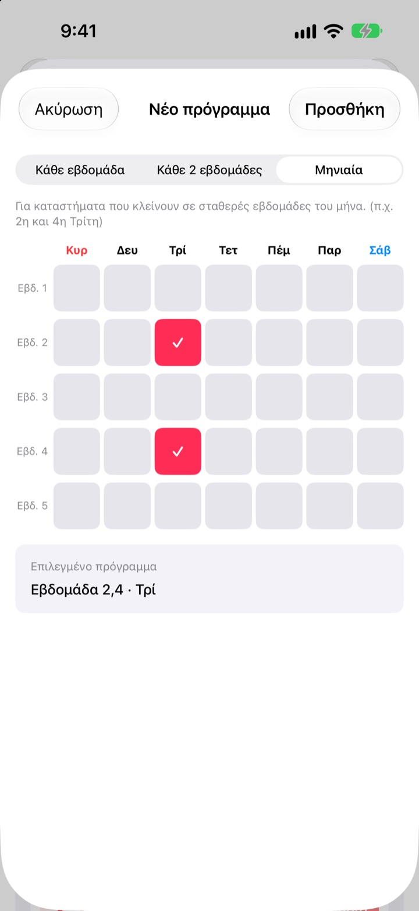
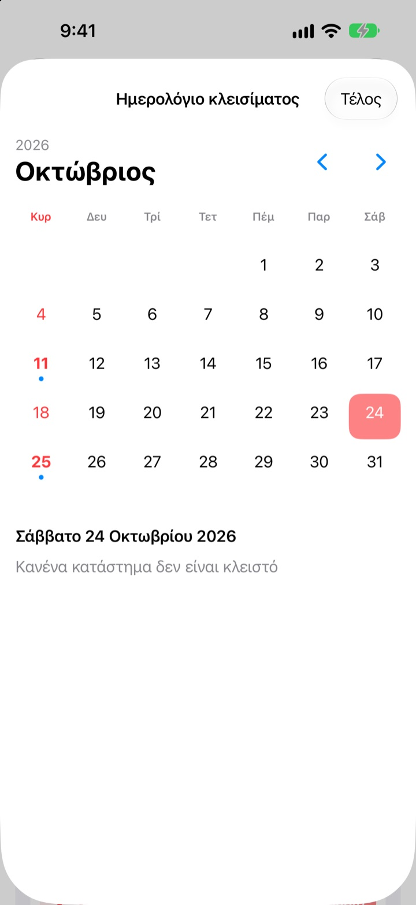
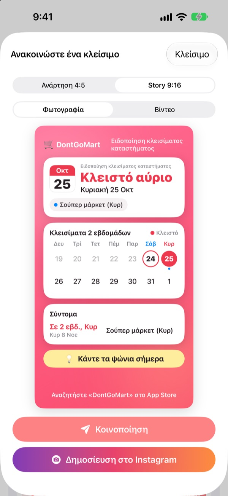

Πριν πας για ψώνια,
δες αν είναι ανοιχτά
Ανοίγοντας την εφαρμογή, βλέπεις πρώτα απ’ όλα αν τα καταστήματά σου είναι ανοιχτά σήμερα. Πριν από κάθε μέρα κλεισίματος έρχεται υπενθύμιση, ώστε να μη βρεις ποτέ ξανά κλειστή πόρτα.
Όλες οι λειτουργίες δωρεάν. Χωρίς λογαριασμό, χωρίς διαφημίσεις.

Δοκίμασέ το με το κατάστημά σου
Διάλεξε κατάστημα και δες αμέσως αν είναι ανοιχτό σήμερα και πότε κλείνει ξανά. Ο υπολογισμός γίνεται με τους ίδιους κανόνες με την εφαρμογή.
Έχεις φτάσει ποτέ με τη λίστα για ψώνια σε κλειστό κατάστημα;
Στην Κορέα τα μεγάλα σούπερ μάρκετ πρέπει να κλείνουν δύο μέρες τον μήνα, αλλά ποιες εξαρτάται από την περιοχή. Συνήθως τη 2η και την 4η Κυριακή, αλλού την Τετάρτη, ενώ το Ούλσαν και το Τζέζου έχουν δικούς τους κανόνες. Στο Costco εξαρτάται από το κατάστημα. Το DontGoMart υπολογίζει τα κλεισίματα με τους κανόνες των καταστημάτων σου και σου λέει πρώτα αν μπορείς να πας σήμερα.
Σωστό για κάθε περιοχή
Διάλεξε καταστήματα που κλείνουν Κυριακή ή Τετάρτη, ή περιοχές με δικό τους πρόγραμμα όπως το Ούλσαν και το Τζέζου. Τα κανονικά Costco και αυτά στο Ντεγκού, το Ιλσάν και το Ούλσαν ρυθμίζονται χωριστά.
Εμφανίζονται και τα κλεισίματα ανήμερα του Σολλάλ και του Τσουσόκ, και μπορείς να παρακολουθείς πολλά καταστήματα μαζί.

Το μαγαζί της γειτονιάς και τα αγαπημένα σου εστιατόρια
Αν ένα κατάστημα λείπει από τη λίστα, πρόσθεσέ το μόνος σου: κάθε εβδομάδα, κάθε δεύτερη εβδομάδα ή ποιες εβδομάδες του μήνα και ποια μέρα κλείνει.
Για εστιατόριο, επικόλλησε έναν σύνδεσμο από το Naver Map ή διάλεξε στιγμιότυπο της σελίδας του, και τα σταθερά ρεπό συμπληρώνονται μόνα τους. Το κείμενο των φωτογραφιών διαβάζεται μόνο στη συσκευή σου.

Υπενθυμίσεις και widget για να μην ξεχνάς
Πάρε ειδοποίηση 1, 2, 3 ή 7 μέρες πριν, την ώρα που θέλεις, και την προηγούμενη μέρα άλλη μία ότι σήμερα είναι καλή μέρα για ψώνια.
Τα widget στην οθόνη Αφετηρίας και κλειδώματος δείχνουν το επόμενο κλείσιμο, αν είναι ανοιχτά αυτή την Κυριακή και τις επόμενες επτά μέρες των εστιατορίων σου. Το ημερολόγιο δείχνει όλο τον μήνα.

Μοιράσου το με μία κάρτα
Κάνε την ενημέρωση κάρτα με ημερολόγιο δύο εβδομάδων και μια συμβουλή για ψώνια και στείλ’ την στην οικογενειακή συνομιλία. Υπάρχουν μεγέθη για ανάρτηση και story στο Instagram, καθώς και σύντομο βίντεο.

Ξεκινάς σε τρία βήματα
- 1
Διάλεξε καταστήματα
Ενεργοποίησε τα καταστήματα και τις περιοχές όπου ψωνίζεις. Όσα θέλεις.
- 2
Άνοιξε τις υπενθυμίσεις
Διάλεξε πόσες μέρες πριν και τι ώρα.
- 3
Πρόσθεσε widget
Δες τα στην οθόνη Αφετηρίας ή κλειδώματος χωρίς να ανοίξεις την εφαρμογή.
Κανόνες κλεισίματος ανά κατάστημα
- Σούπερ μάρκετ (κλειστό τις Κυριακές)
- 2η και 4η Κυριακή · οι περισσότερες περιοχές
- Σούπερ μάρκετ (κλειστό τις Τετάρτες)
- 2η και 4η Τετάρτη · μέρος του Γκιόνγκι, Τσονγκτζού
- Σούπερ μάρκετ (Ούλσαν)
- 2η Τετάρτη, 4η Κυριακή
- Σούπερ μάρκετ (Τζέζου)
- 2η Παρασκευή, 4ο Σάββατο
- Costco κανονικό
- 2η και 4η Κυριακή
- Costco Ντεγκού
- 2η και 4η Δευτέρα · Ντεγκού, Ντεγκού Innovation
- Costco Ιλσάν
- 2η και 4η Τετάρτη
- Costco Ούλσαν
- 2η Τετάρτη, 4η Κυριακή
- Σολλάλ, Τσουσόκ
- κλειστά ανήμερα
Τα υποχρεωτικά κλεισίματα τα ορίζουν οι τοπικές αρχές και μπορεί να αλλάξουν. Αν κάτι δεν ταιριάζει, γράψε μας στη διεύθυνση παρακάτω.
Συχνές ερωτήσεις
Οι μέρες κλεισίματος δεν ταιριάζουν.
Τα υποχρεωτικά κλεισίματα ορίζονται από τοπικούς κανονισμούς και διαφέρουν ανά περιοχή. Έλεγξε στις Ρυθμίσεις ότι διάλεξες τον σωστό τύπο καταστήματος (κλειστό Κυριακή, Τετάρτη, Ούλσαν, Τζέζου κ.λπ.). Αν πάλι δεν ταιριάζει, στείλε μας όνομα και περιοχή του καταστήματος και θα το ελέγξουμε.
Το κατάστημά μου δεν είναι στη λίστα.
Πρόσθεσέ το ως δικό σου κατάστημα. Διάλεξε κάθε εβδομάδα, κάθε δεύτερη εβδομάδα ή ποιες εβδομάδες του μήνα και ποια μέρα κλείνει, π.χ. τη 2η και την 4η Κυριακή.
Τα ρεπό ενός εστιατορίου δεν συμπληρώθηκαν σωστά.
Στην εισαγωγή από σύνδεσμο Naver Map, η σελίδα του εστιατορίου πρέπει να γράφει τα σταθερά ρεπό. Με στιγμιότυπο, φρόντισε να φαίνεται η σημείωση για το κλείσιμο. Μπορείς να διορθώσεις τα πάντα πριν από την αποθήκευση.
Δεν λαμβάνω υπενθυμίσεις.
Έλεγξε ότι οι γνωστοποιήσεις επιτρέπονται στις Ρυθμίσεις > Γνωστοποιήσεις > DontGoMart και ότι οι υπενθυμίσεις είναι ενεργές στην εφαρμογή.
Το widget δεν ενημερώνεται.
Άνοιξε μία φορά την εφαρμογή και τα widget ανανεώνονται. Αν δεν αλλάξει, αφαίρεσε το widget και πρόσθεσέ το ξανά.
Τι είναι τα φιλοδωρήματα;
Όλες οι λειτουργίες του DontGoMart είναι δωρεάν. Ο καφές, το γλυκό και το γεύμα είναι φιλοδωρήματα για τον δημιουργό. Μετά βλέπεις ένα ευχαριστώ και ένα σήμα με το πόσες φορές έδωσες.
Πού ρωτάω για πληρωμές ή επιστροφές χρημάτων;
Τις αγορές μέσα στην εφαρμογή τις διαχειρίζεται η Apple, οπότε η επιστροφή ζητείται στο reportaproblem.apple.com. Για οτιδήποτε άλλο, γράψε μας.
Πώς χειρίζεστε τα δεδομένα μου;
Δεν υπάρχουν λογαριασμοί, διαφημίσεις ή εργαλεία παρακολούθησης, και το κείμενο των στιγμιοτύπων διαβάζεται μόνο στη συσκευή σου. Λεπτομέρειες στην πολιτική απορρήτου παρακάτω.
Ερωτήσεις ή ιδέες; Γράψε στο hyunho.lee.1993@gmail.com. Συνήθως απαντάμε σε μία με δύο μέρες.